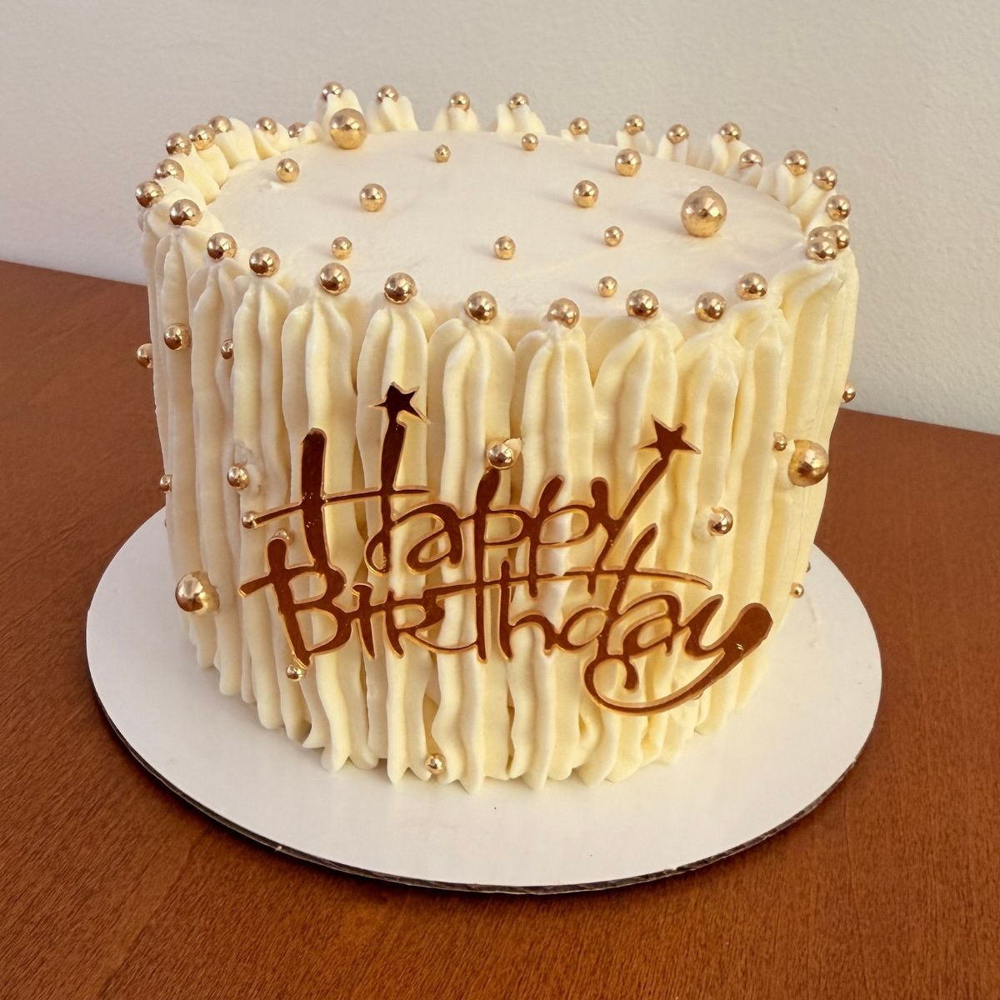

Home
Butternache

Birthday cake, covered with white butternache
Butternache is a rich and silky frosting that combines the buttery flavor
of buttercream with the smooth texture and stability of ganache.
It creates a creamy, sturdy finish that works beautifully for filling,
covering, and decorating cakes.
Ingredients
- 800 gr White Chocolate
- 260 gr Heavy Cream
- 300 gr Butter
Steps
- Melt the chocolate with the cream in the microwave in 30-second intervals.
- Place in a mixer fitted with a paddle attachment and mix for 10 to 12 minutes at medium-high speed.
- Add the room-temperature butter, a few small pieces at a time.
- Once the butter has been incorporated, continue beating at medium-high speed until the mixture lightens in color and increases in volume. If it has not become aerated after 15 minutes, place it in the refrigerator for 10 minutes and then resume beating.